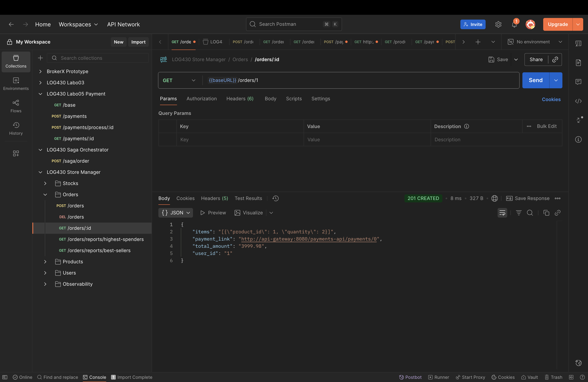
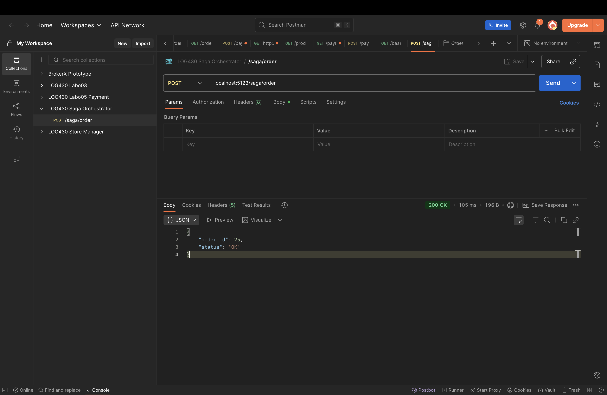
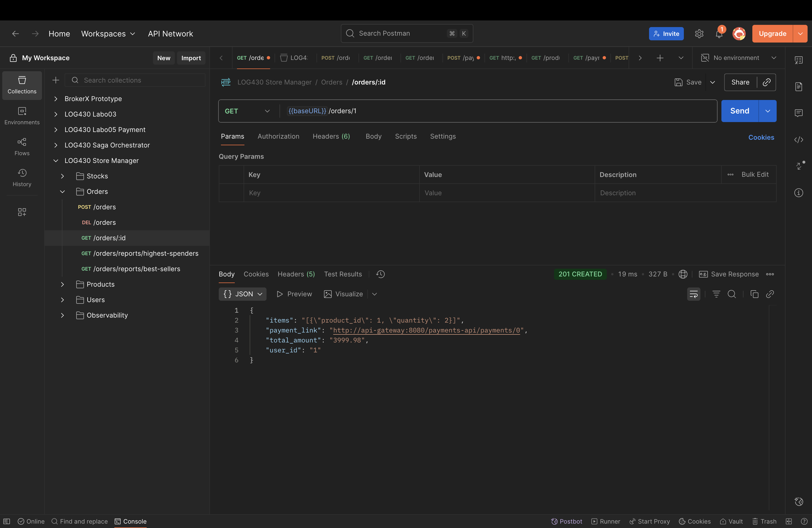

Reda El Mansouri ELMR90070104
Rapport de laboratoire
LOG430 — Architecture logicielle
2025-10-03
École de technologie supérieure

Reda El Mansouri ELMR90070104
Rapport de laboratoire
LOG430 — Architecture logicielle
2025-10-03
École de technologie supérieure
Le fichier qui implémente la logique de la machine à états de l’Order Saga est src/controllers/order_saga_controller.py.
COMPLETED.Extrait clé montrant l’état initial et la boucle d’orchestration:
class OrderSagaController(Controller):
def __init__(self):
super().__init__()
self.current_saga_state = OrderSagaState.CREATING_ORDER
def run(self, request):
...
while self.current_saga_state is not OrderSagaState.COMPLETED:
if self.current_saga_state == OrderSagaState.CREATING_ORDER:
self.current_saga_state = self.create_order_handler.run()
elif self.current_saga_state == OrderSagaState.DECREASING_STOCK:
self.increase_stock_handler = DecreaseStockHandler(order_data["items"])
self.current_saga_state = self.increase_stock_handler.run()
else:
self.is_error_occurred = True
self.logger.debug(f"L'état saga n'est pas valide : {self.current_saga_state}")
self.current_saga_state = OrderSagaState.COMPLETED
Comparaison avec le diagramme de la machine à états (voir docs/arc42/docs.md) et l’énumération OrderSagaState:
class OrderSagaState(Enum):
CREATING_ORDER = 1
DECREASING_STOCK = 2
CREATING_PAYMENT = 3
INCREASING_STOCK = 4
CANCELLING_ORDER = 5
COMPLETED = 6
Constat de complétude: l’implémentation est partielle. Les transitions suivantes manquent dans le contrôleur:
DECREASING_STOCK vers CREATING_PAYMENT déjà amorcé, mais la gestion de CREATING_PAYMENT n’est pas implémenté.INCREASING_STOCK absente.CANCELLING_ORDER absente.else marque tout état non géré comme erreur et termine, ce qui court-circuite la machine à états prévue.Le déclenchement de la création et de la suppression de commandes est effectué par src/handlers/create_order_handler.py.
response = requests.post(f'{config.API_GATEWAY_URL}/store-manager-api/orders',
json=self.order_data,
headers={'Content-Type': 'application/json'}
)
response = requests.delete(
f"{config.API_GATEWAY_URL}/store-manager-api/orders/{self.order_id}"
)
Pour l'accès à la BD, ce handler n’y accède pas directement il consomme un service externe par HTTP. La persistance côté Store Manager est encapsulée derrière l’API.
Dans create_order_handler.py, l’endpoint invoqué pour créer une commande est:
POST {API_GATEWAY_URL}/store-manager-api/orders
Dans la collection Postman du Labo 05, la requête correspondante est celle de création de commande, nommée «POST /store-manager-api/orders» et attend un corps JSON similaire à:
{
"user_id": 1,
"items": [
{"product_id": 3, "quantity": 2},
{"product_id": 2, "quantity": 4}
]
}
À titre indicatif, la collection Postman fournie pour l’orchestrateur dans ce dépôt contient l’appel «POST /saga/order» (docs/collections/saga_orchestrator.json) qui démarre la saga côté orchestrateur:
POST localhost:5123/saga/order
La capture partagée montre la requête «GET /orders/:id» dans la collection «LOG430 Store Manager / Orders». Elle confirme la présence des ressources côté Store Manager et illustre la réponse contenant, entre autres, total_amount et un payment_link.

POST {API_GATEWAY_URL}/store-manager-api/stocks
{
"items": [
{ "product_id": <id>, "quantity": <qte> },
{ "product_id": <id>, "quantity": <qte> }
],
"operation": "-"
}
{
"items": [
{ "product_id": <id>, "quantity": <qte> },
{ "product_id": <id>, "quantity": <qte> }
],
"operation": "+"
}
Les informations de la commande utilisées sont la liste des items (items) transmise à l’orchestrateur, chaque item contenant au minimum product_id et quantity. Le champ operation vaut "-" pour décrémenter le stock lors de l’exécution normale et "+" pour rétablir le stock lors du rollback.
Extraits de code :
response = requests.post(
f"{config.API_GATEWAY_URL}/store-manager-api/stocks",
json={
"items": self.order_item_data,
"operation": "-"
},
headers={'Content-Type': 'application/json'}
)
response = requests.post(
f"{config.API_GATEWAY_URL}/store-manager-api/stocks",
json={
"items": self.order_item_data,
"operation": "+"
},
headers={'Content-Type': 'application/json'}
)
GET {API_GATEWAY_URL}/store-manager-api/orders/{order_id} # pour récupérer total_amount
POST {API_GATEWAY_URL}/payments-api/payments # pour créer la transaction de paiement
Données utilisées:
order_id (issu de la première étape de la saga)user_id (du payload initial de la commande)total_amount (lu depuis le GET /orders/{id})Extraits de code (src/handlers/create_payment_handler.py):
order_resp = requests.get(
f"{config.API_GATEWAY_URL}/store-manager-api/orders/{self.order_id}",
headers={'Content-Type': 'application/json'}
)
order_data = order_resp.json() or {}
self.total_amount = order_data.get('total_amount', 0)
payment_payload = {
"order_id": self.order_id,
"user_id": self.order_data.get("user_id"),
"amount": self.total_amount
}
pay_resp = requests.post(
f"{config.API_GATEWAY_URL}/payments-api/payments",
json=payment_payload,
headers={'Content-Type': 'application/json'}
)
OrderSagaState.COMPLETEDOrderSagaState.INCREASING_STOCK (déclenche le rollback du stock)POST http://localhost:5123/saga/order
{
"user_id": 1,
"items": [
{"product_id": 3, "quantity": 2},
{"product_id": 2, "quantity": 4}
]
}
# src/saga_orchestrator.py
@app.post('/saga/order')
def saga_order():
with tracer.start_as_current_span("saga.order.start"):
order_saga_controller = OrderSagaController()
return jsonify(order_saga_controller.run(request))
# src/controllers/order_saga_controller.py (extrait des transitions)
if self.current_saga_state == OrderSagaState.CREATING_ORDER:
self.current_saga_state = self.create_order_handler.run()
elif self.current_saga_state == OrderSagaState.DECREASING_STOCK:
self.increase_stock_handler = DecreaseStockHandler(order_data["items"])
self.current_saga_state = self.increase_stock_handler.run()
elif self.current_saga_state == OrderSagaState.CREATING_PAYMENT:
self.create_payment_handler = CreatePaymentHandler(self.create_order_handler.order_id, order_data)
self.current_saga_state = self.create_payment_handler.run()
elif self.current_saga_state == OrderSagaState.INCREASING_STOCK:
self.current_saga_state = self.increase_stock_handler.rollback()
elif self.current_saga_state == OrderSagaState.CANCELLING_ORDER:
self.current_saga_state = self.create_order_handler.rollback()
Capture du POST orchestrateur:

POST {API_GATEWAY_URL}/store-manager-api/orders # créer la commande
POST {API_GATEWAY_URL}/store-manager-api/stocks # décrémenter le stock (operation = "-")
POST {API_GATEWAY_URL}/payments-api/payments # créer la transaction de paiement
# Compensations côté client en cas d’échec:
# -> si paiement échoue -> POST stocks (operation = "+") puis DELETE /orders/{id}
Avantages:
Inconvénients:
Capture de la lecture d’une commande pour vérifier le total_amount, etc.:
